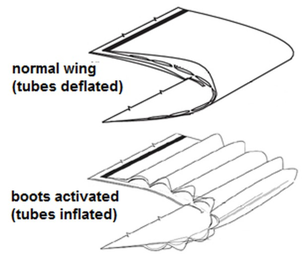
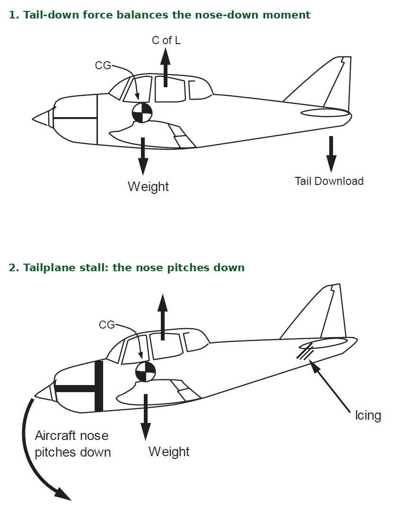

Lesson 23: Flight Controls, Fluid Residues and In-flight Icing
Learning objectives
- Perform an effective flight-control check after de-icing.
- Recognise the hazard of thickened fluid residues.
- Operate ice protection systems and respond to SLD and tailplane icing.
Ice behind the protected areas is a warning sign of severe icing.
Flight-control check
- After de-icing and before take-off, check that the flight controls move full and free in the correct sense, as the checklist requires.
- Check smoothly and slowly. Any stiffness, restriction or unusual noise is a reason to stop and investigate. Do not take off with doubtful controls.
- Ice or snow in control surface gaps and hinges can restrict movement even when the surfaces themselves look clean.
Thickened fluid residues
Type II and IV fluids can dry out and leave a residue in the aerodynamically quiet areas of the aircraft. This is more likely when they are used for one-step treatments without a hot Type I de-icing step. When rehydrated by rain or humidity, the residue swells into a gel that can freeze in flight.
Restricted or stiff elevator, aileron or trim movement, often at high altitude, sometimes with vibration. Report any unusual control feel in the technical log. Maintenance carries out residue inspections and cleaning at the intervals in the maintenance programme.
Ice protection systems
- Thermal (bleed air or electrical) anti-ice on wing leading edges, engine inlets, probes and windows: switch on before or when entering icing conditions, as the AFM requires.
- Pneumatic de-icing boots on many turboprops: current guidance for most modern aircraft is to activate them at the first sign of ice and keep them operating. Follow your AFM.
- Ice detectors give a warning, but primary or advisory status depends on the type. Know which yours is.
- Use the minimum speeds for icing and the autopilot limitations in icing conditions from the AFM. The autopilot can hide changes in handling until it disconnects.

Severe icing and SLD
Signs of severe icing or supercooled large droplets include:
- ice behind the protected areas, such as on the upper or lower wing surface aft of the boots;
- ice on the side windows, or water splashing and streaming on the windshield at sub-zero temperatures;
- unusual or uncommanded roll, or unexpected aileron or trim forces;
- a rapid loss of speed or climb performance.
Action: tell ATC and leave the icing conditions immediately — change altitude or heading, or move to colder or warmer air. Disconnect the autopilot carefully if the AFM requires it, holding the controls firmly, and avoid abrupt manoeuvres.
Tailplane icing
The tail is thinner than the wing and collects ice more efficiently. A tailplane stall is most likely when the flaps are extended during the approach. Symptoms are light or buffeting elevator forces, difficulty in trimming, or a sudden nose-down pitch. Recovery differs from a wing stall, and the procedure is type-specific — typically return the flaps to the previous setting and pull back on the controls. Follow the AFM/QRH.

Key takeaways
- Full and free control check after de-icing — never take off with doubtful controls.
- Thickened fluid residues can freeze in flight and restrict controls; report unusual feel.
- Severe icing or SLD: inform ATC and leave the conditions immediately.
- Tailplane stall is most likely with flap extension; recovery is type-specific.
Knowledge check
In flight, you notice ice forming on the side windows and aft of the wing de-icing boots. What should you do?